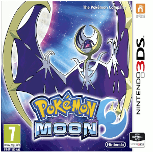

| Home | Anime | Anime Openings | 3DS Games |
I really do enjoy all types of video games, mostly JRPGS.
I would do a list on all of the best 2016 video games, however I'm pretty sure someone is doing that, and I have never really played any of the new consoles.
Sadly, I only have a 2DS so I decided to the best 3DS games, but I also have not played a lot of them yet.
The ones listed are games that I either own or played the demo of.
CLICK ON THE IMAGE TO ACCESS THE LINK
| Fire Emblem Fates (Birthright, Conquest, Relevation)
Will you go with the siblings that have been with you for your entire childhood, or your biological siblings that you were taken away from? This Fire Emblem game probably has the best storyline and gives you three choices: go with your biological siblings, go with your siblings that you were with for the longest time, or choose to go with neither. |
|
| Rhythm Heaven Megamix
The newest DS game in the Rhythm Heaven series. Rhythm Heaven Megamix is a combination of fan-favorite and new Rhythm Heaven minigames in one cartridge. It's a good rhythm game with catchy songs and an extremely difficultly. (There is no easy mode on this game!) |
|
| Kirby: Planet Robobot
Who can say no to Kirby? This Kirby game is very different as Kirby can now control a mech, which is pretty cool! |
|
| Phoenix Wright: Ace Attorney - Spirit of Justice
Phoneix Wright: Ace Attorney games are great! This continuation to Dual Destinies shows us another mechanic of the game, the ability to know what the victim saw, heard, and smelled before their death. After hearing Maya's scream during their phone call, our favorite defense attorney travels to her homeland. One thing about Maya's home is that all of the defense attorneys vanished. With no one else to protect the suspects and find the true killers, it's up to Phoenix Wright to prove them innocent! |
|
|  | Pokemon Sun and Moon
Mostly every Pokemon games are good. With 3D sprites, new pokemon, some familiar ones with an Alolan style, and Z-Moves, this Pokemon game should be a huge success. |